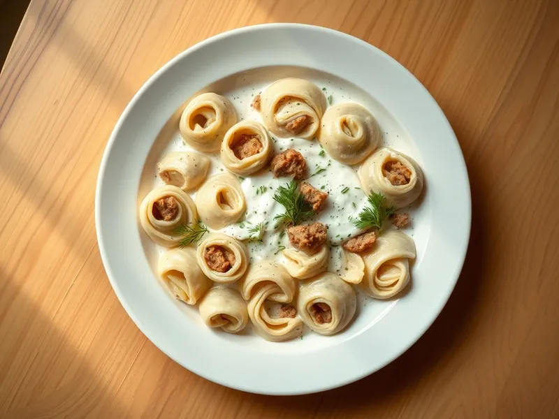

Ленивые пельмени на сковороде
Рулет из тонкого теста с фаршем, нарезанный кусочками и тушённый со сметаной и луком
30 мин4 порц.635 ккал на порциюБ 27 · Ж 36 · У 50Русская кухня
Открыть в приложении: порции, таймеры, список покупок
Продукты на 4 порц.
- Мука пшеничная1,5 стак.
- Вода400 мл
- Яйцо куриное1 шт
- Фарш свино-говяжий400 г
- Лук репчатый2 шт
- Сметана 20%6 ст. л.
- Растительное масло1,5 ст. л.
- Соль1,5 ч. л.
- Перец чёрный молотый1 щеп.
- Лавровый лист1 шт
- Укроп по желаниюпо вкусу
Как готовить
- Замесите тесто из муки, яйца, 100 мл холодной воды и щепотки соли, 4-5 минут, пока оно не станет гладким и не перестанет липнуть. Накройте миской.
- Одну луковицу натрите на мелкой тёрке и смешайте с фаршем, солью, перцем и 2 ст. л. воды. Вторую луковицу нарежьте полукольцами.
- Раскатайте тесто в тонкий пласт толщиной 2 мм, распределите фарш ровным слоем, оставив край 2 см, и сверните плотным рулетом. Нарежьте его кусочками шириной 3 см.
- В глубокой сковороде обжарьте лук в масле на среднем огне 3 минуты, выложите кусочки рулета срезом вверх, плотно друг к другу.
- Смешайте сметану с 300 мл горячей воды и солью, залейте пельмени, положите лавровый лист. Тушите под крышкой на слабом огне 15 минут, пока тесто не станет мягким, а фарш не приготовится. Посыпьте укропом.
Совет. Раскатывайте тесто тоньше: толстые слои за 15 минут тушения останутся сырыми внутри рулета.